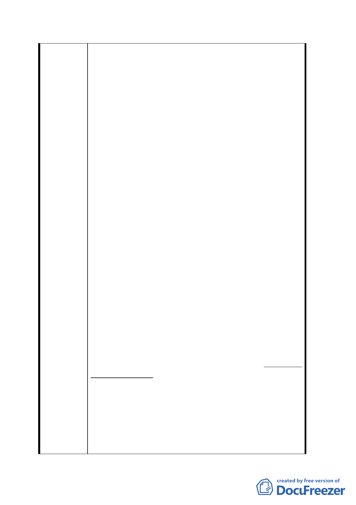

公尺之長條行人大道之廣大場地供遊玩散歩及其他
活動之用，在該大區域已有十足之廣場，再添加另
一廣場，絶非計画案之最佳答案，或最適合該地区
居民之迫切需求。顕然有另求賢策之需。
2.政府之多次錯誤及忽略居民権益：政府対計画案
地区，自光復至今，歴次所施策略全是錯上加錯，
原可易獲解決之問題，経半世紀之長期擱置不理，
完全未顧及計画案内居民之権益，施行了閉門造車
及乱用政府権力之施圧手段，如多次流標的公開標
售，處理前中華商場時，未包括而忽視計画案内違
建居民之権益及合情合理之去路或他遷妥善安排。
更対民等是計画案中僅有之十三所完全合法建築物
所有権人之顧及却完全裝盲裝聾而馬耳東風。稱之
民主時代之愛民，與毎逢選擧前，大聲窮呼之美言
善語，相差有千萬里之遠。歴代政府之言行不一，
所植下厳重後果，與颱風暴雨後之土石流相違不遠。
3.違建住民之不断激増：計画案内之違章建築住
民，早期僅有二三十人，是由官階較高之大陳撤退
軍人及眷屬構成，為数不多。要安排遷居他處、難
度微小、可能牽渉政府之経費負担也極為有限，因
戸数或人数到数年後也不及五十。三十多年後在處
理前中華商場時，人数已増至一百多。据聞目前居
民已漲到三四百人左右。不但人口、違章建築物之
数和高度也不断不停的増加。處理難度日益増高。
4.合法建築物所有権人、一直守法一切依舊未変：
但民等在計画案中僅有之十三所完全合法建築物，
半世紀前和半世紀後，仍然為十三所，数字、構造、
形状、均依舊不変，忠実守法至今。此僅有之十三
所完全合法建築物所有権人，只有唯一懇求恵予同
意、支持准許依 92.02.06 総統令，修正國有財産
法第 52-2 條、向國有財産局申請承購基地。可使
此十三所完全合法建築物，有互相合作修建整容或
改建之機会。此十三所完全合法建築物所有権人，
守法久候已逾半世紀。
5.應割開為兩案分別處理：（１）僅有之十三所完全
合法建築物所有権人，如條件符合，應従寛准許依
国有財産法第 52-2 條向國有財産局申請承購基
地。若是條件未甚符合，應従寛優恵設法補救、以
一四